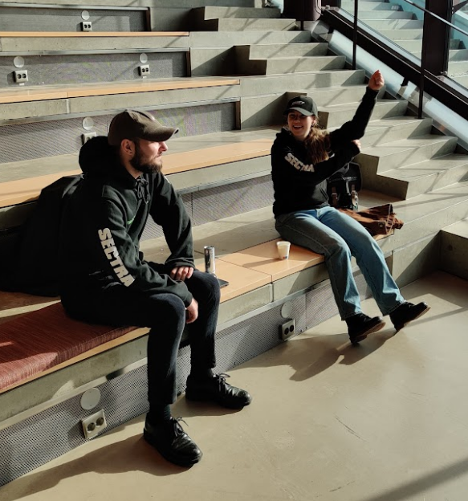
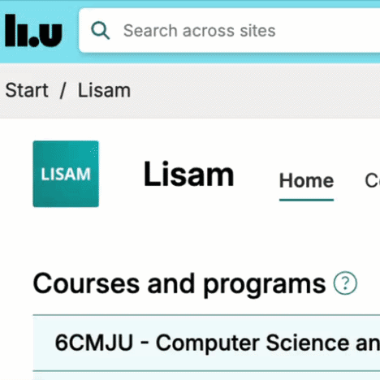
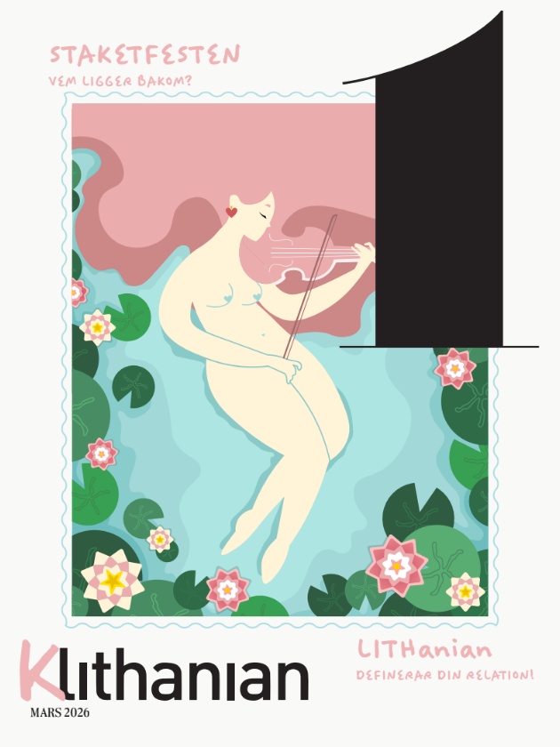
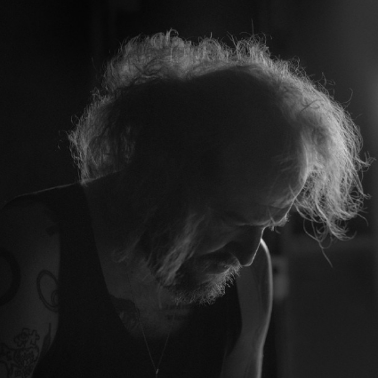
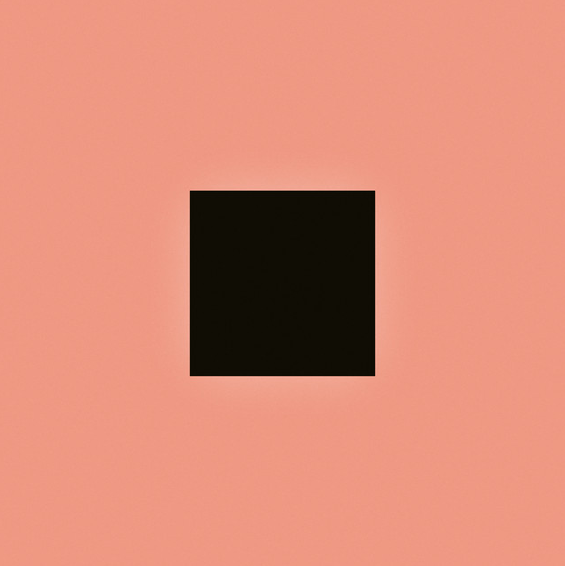
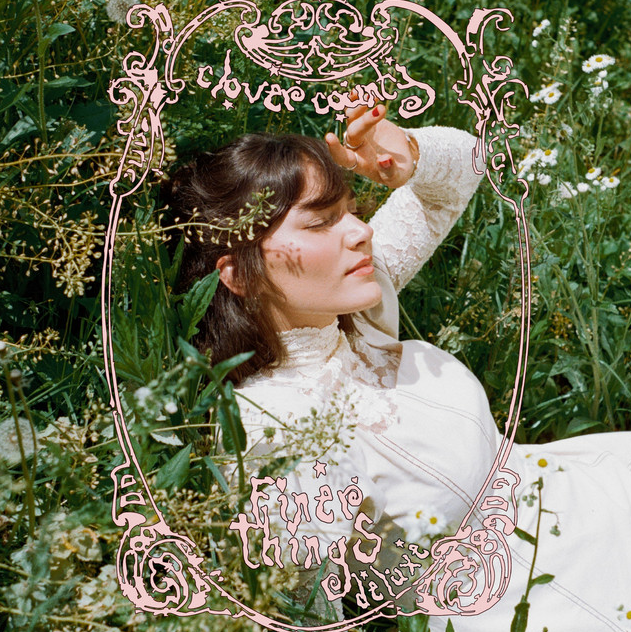
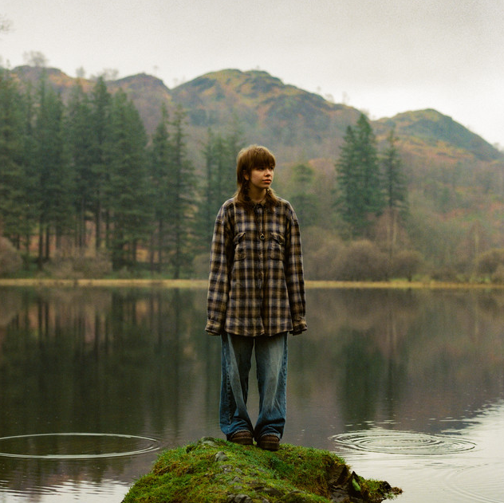
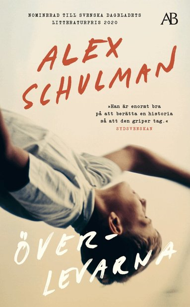
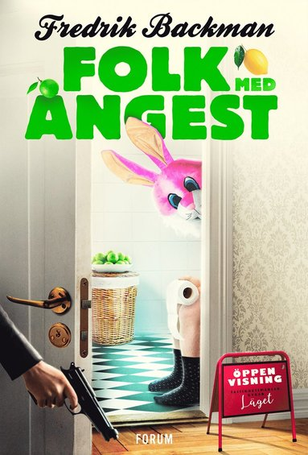
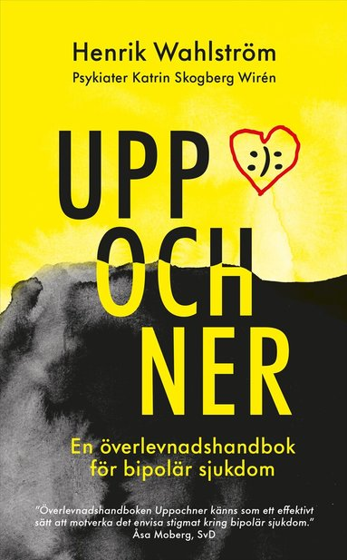

what are you doing?
this is a now page. if you have your own site, you should make one too!
my life is often busy, and i've been somewhat secretive when sharing details with family and friends. i thought this would be a great way to keep everyone updated on what i'm currently doing. i'll do my best to keep this page updated with any new happenings. thank you, Phillip Ridlen, for inspiring me with your now page!
this is what i'm doing as of february 28 2026
‣ see what i have been up to previously
life 🌟

this month was the 50-year anniversary of the section i was part of during university, so i attended a celebratory sitting. some of my friends were involved in organizing it, it was fun to see all the work they had put into making it happen. shortly after, i got sick and had to stay home from work for a week. once i was almost fully recovered, i went to boda borg with one of my friend groups, highly recommend! while i was sick, i emailed everyone i have mentioned on this website. it turned out to be a lot of fun and led to several great conversations. me, Justin Higgins, and Taylor Troesh have since started talking about making a reading webring, like blogs.hn but for books, if you want to part of this, check this out!
work 💼
Opera Software
i have taken a break from working on the card stack and have instead been focusing primarily on automated maestro tests. i initially set everything up manually back in october, but after a recent power outage at the office, i spent some time reconfiguring the setup to ensure it can recover automatically from situations like that. things are starting to feel more stable now. i have installed the machine in one of our server rooms, and it has been running smoothly ever since, at least so far...
organizations 🏢
LiTHe Hax

the workload for LiTHe Hax is picking up again. we recently organized a kali workshop in collaboration with the swedish national hacking team. we also took part in the WebbU hackathon -- which i founded in 2022 -- i believe, so it was especially fun to be involved again. this year, we built a clone of the student website lisam, with a twist (i will attach a GIF). at the same time as the hackathon, we participated in Cyberlov for FRO at GOTO 10. we wanted to be part of it since GOTO 10 is closing down (you can read more about that in my notes section). it is really sad to see it go. on top of that, we have been marketing our upcoming CTF, developing new challenges for it and evaluating them. as you can probably tell, we have a lot going on right now.
LiTHanian

our second issue, ironically titled #1, is wrapping up and will soon be sent to print. we have so many strong articles in this edition, and i genuinely cannot wait to see it in physical form. i am incredibly proud of the quality we have achieved for this one. apparently, i have also been nominated for a gold medal, the highest award in the student union, partly because of this work (along with other university engagements). that feels huge to me. i have never really thought that the things i do have a meaningful positive impact on others, so this nomination has been a very pleasant surprise. i am still not entirely sure what i have done, concretely, to deserve it, but i am deeply grateful.
hobbies ⚙️
programming
i have done quite a bit of programming this month. i picked up my long-term operating system project again and began working on a compiler toolchain related to it. i have also started preparing for a project that a friend and i will be working on in april. on top of that, i have done some ethical hacking and added new features to my website.
music
songs played
1652 plays
daily average
63 plays
biggest listening day
feb 21st with 154 plays
top artist

Bon Iver
top album

SABLE, fABLE by Bon Iver
top song

Virginia Slim by Clover County
last played

High Demand by May Payne
writing
i have been writing a series of blog posts about building a lightweight operating system from “scratch”. i have also been wrapping up my english poetry collection and have started publishing some of my finished poems on GitHub.
reading



i am currently reading several books in parallel. Överlevarna by Alex Schulman, Folk med ångest by Fredrik Backman, and Uppochner: En överlevnadshandbok för bipolär sjukdom by Henrik Wahlström and Katrin Skogberg Wirén.
expert progress 🎓
the concept of reaching 10,000 hours to become a professional or an expert in a field is derived from Malcolm Gladwell's book "Outliers: The Story of Success". gladwell popularized the idea that achieving a high level of proficiency in any field typically requires about 10,000 hours of dedicated practice. this notion is based on the research of psychologist Anders Ericsson, who studied the practice habits of elite performers in various domains.